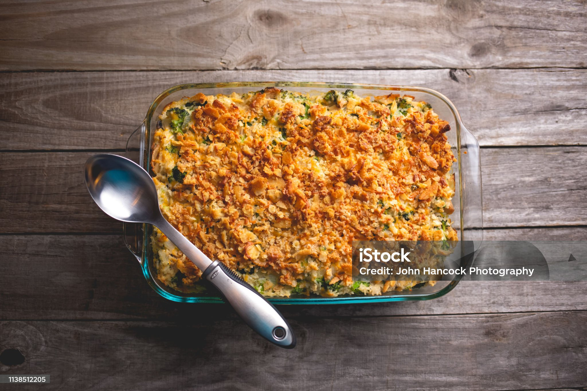
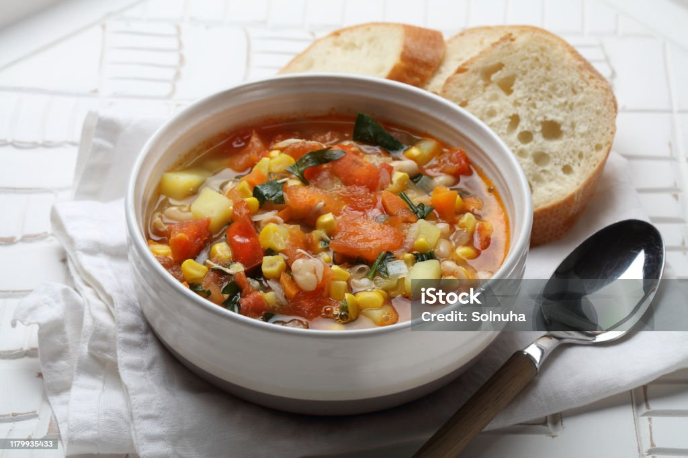
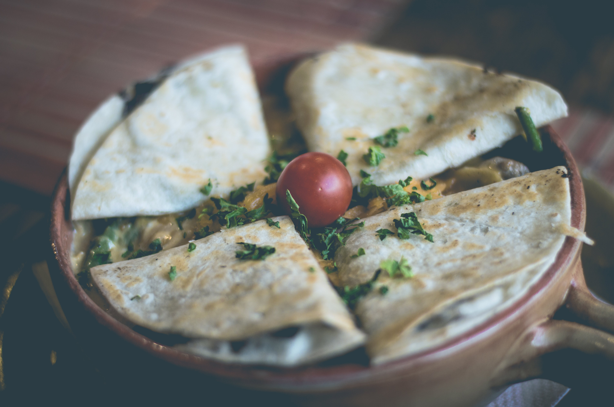
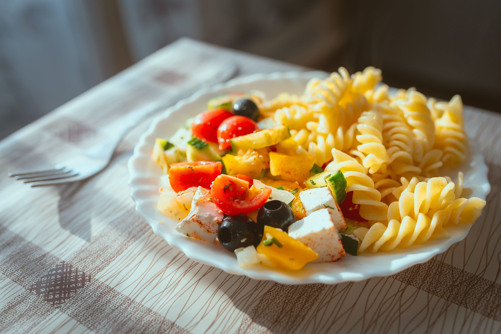
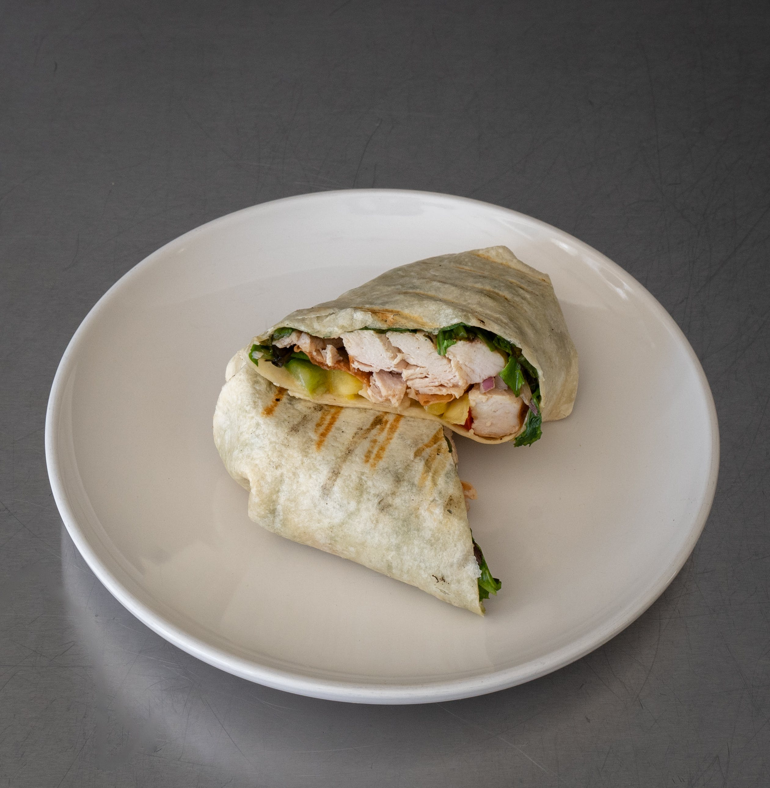
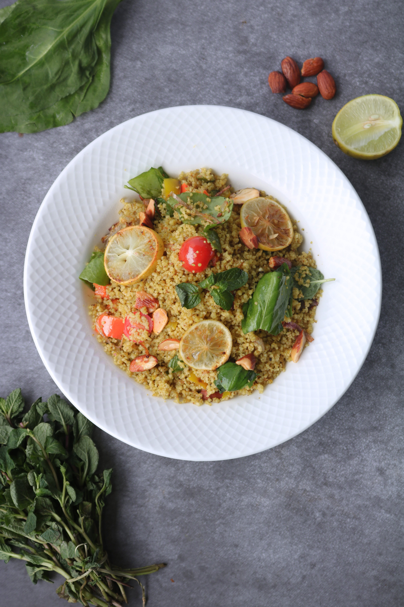

Health Meals
What to expect
This will contian a list of cheap and healthy meals for you to cook, there will be a variety including ones better suited for famlies or individual, enjoy.
Vegetable Soup
Vegetable soup is popular for it's health properties and how easy it is to make it, not to mention it one batch can last you multiple days.
Ingredients
- 1 onion, chopped - $0.50
- 2 carrots, diced - $0.30
- 2 celery stalks, diced - $0.30
- 1 can of diced tomatoes - $0.99
- 4 cups of vegetable broth - $1.00
- 1 cup of chopped spinach - $0.50
- Salt, pepper, and herbs to taste - $0.10
- Total Cost: $3.69 (serves 4)
- Calories: Approximately 100 calories per serving
Black Bean and Vegetable Quesadillas
Quesadillas are popular, but not exactly for being healthy. Nromally theyr'e delcious, but with the cheese and grease come at the cost of your health, however, these vegetable quesedilla brings the best from both worlds.
Ingredients
- 1 can of black beans, drained and rinsed - $0.99
- 1 bell pepper, sliced - $0.50
- 1 onion, sliced - $0.50
- 1 cup of shredded cheese - $1.00
- 4 small tortillas - $0.50
- Salsa and Greek yogurt for serving (optional) - $0.50
- Total Cost: $3.49 (serves 2)
- TCalories: Approximately 400 calories per serving
Pasta Primavera
Pasta has a great variety of health options, and it's one of the easiest bases for vegetarian diets.
Ingredients
- 8 oz of whole wheat pasta - $1.00
- 1 cup of mixed vegetables (e.g., broccoli, bell peppers, carrots) - $1.50
- 2 cloves of garlic, minced - $0.20
- 2 tablespoons of olive oil - $0.20
- Salt, pepper, and Italian seasoning to taste - $0.10
- Grated Parmesan cheese for serving (optional) - $0.50
- Total Cost: $3.50 (serves 2)
- Calories: Approximately 350 calories per serving
Chickpea Salad Sandwich
Chicken salad is one of my personal favorties by itself, but as you're well aware it really isn't very convenient on the go or for a work lunch. Adding a simple wrap or bread can take it to another level, adding convenience into an already healthy and amazing dish.
Ingredients
- 1 can of chickpeas, drained and rinsed - $0.99
- 2 tablespoons of Greek yogurt - $0.25
- 1 tablespoon of lemon juice - $0.10
- 1/4 cup of diced celery - $0.20
- 1/4 cup of diced red onion - $0.30
- Lettuce and whole wheat bread for serving - $1.00
- Total Cost: $2.84 (serves 2)
- Calories: Approximately 300 calories per serving
Oven-Roasted Vegetables with Quinoa
You just cannot have enough vegetables, the more the merrier espesially in the current enviorment where most people are missing vegetables from their diet.
Ingredients
- 1 cup of quinoa - $1.00
- 1 bell pepper, sliced - $0.50
- 1 zucchini, sliced - $0.50
- 1 carrot, sliced - $0.20
- 1 tablespoon of olive oil - $0.10
- Salt, pepper, and herbs of your choice - $0.10
- Total Cost: $2.40 (serves 2)
- Calories: Approximately 350 calories per serving